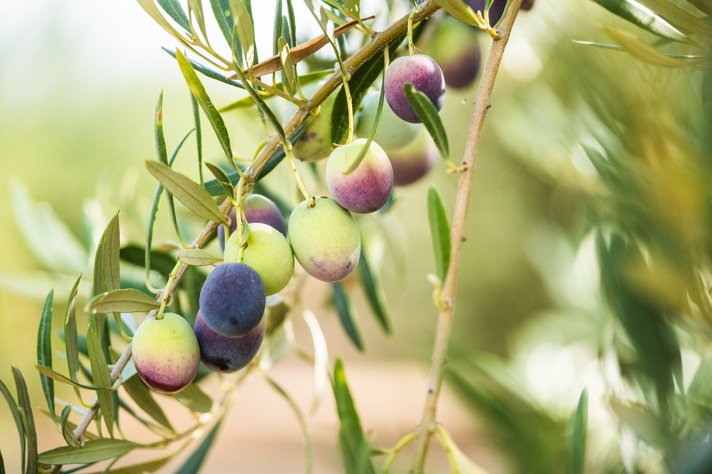
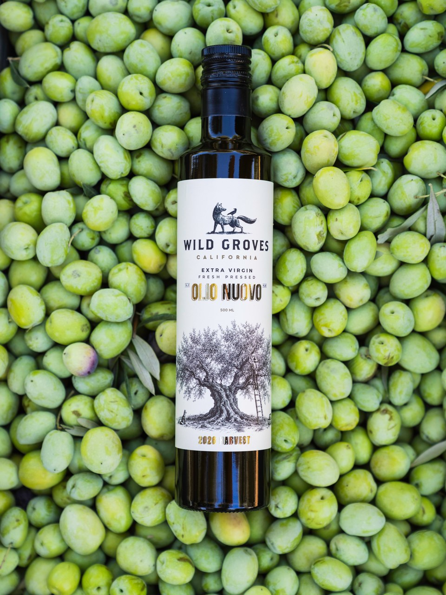
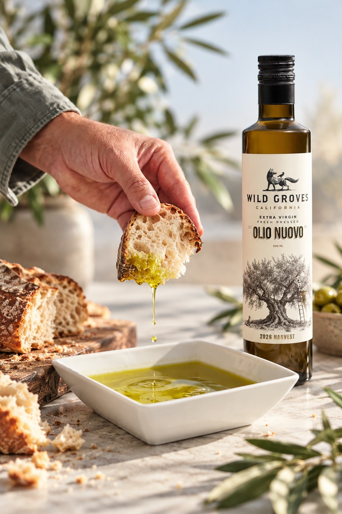
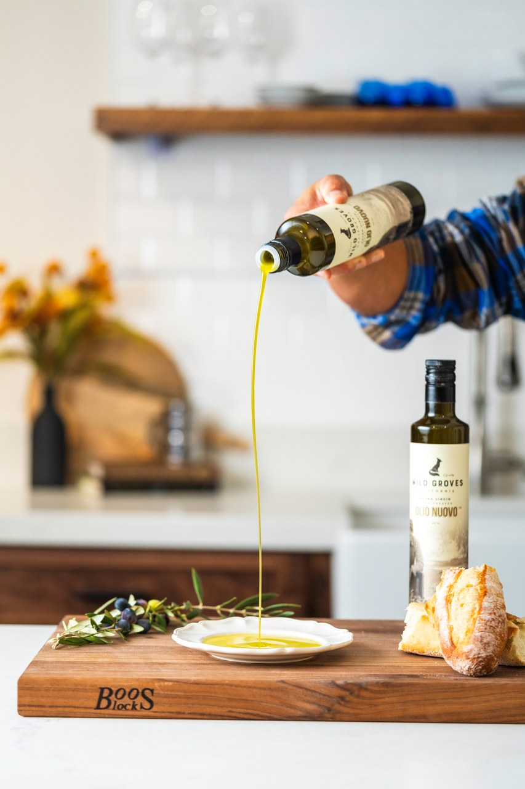
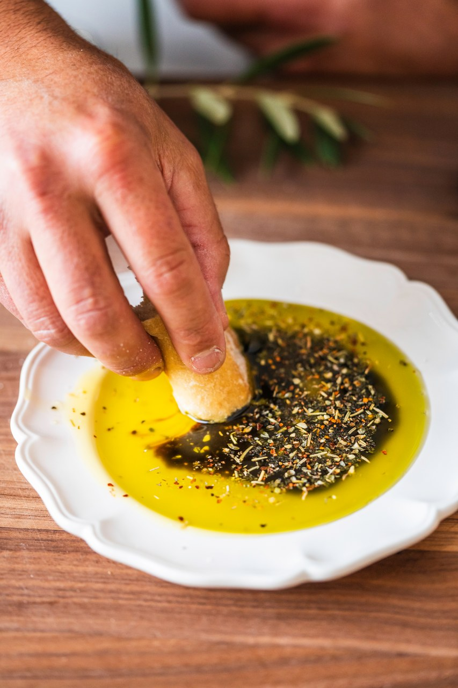

Wild Groves · Field Notes
What's the Healthiest Olive Oil?
I've always liked Dewey's olive oil, but the boldest, freshest one took me a while to appreciate. Here's what changed my mind, and why that peppery kick is a good thing.

I've been photographing Wild Groves for about ten years. I've spent time in the groves, watched the harvest, and listened to Dewey explain everything from olive varieties to milling techniques.
And I have a confession.
For the first few years, I didn't particularly like his freshest olive oil.
Dewey would offer me a taste of the new harvest, and I'd politely try it. It was grassy, bitter, and peppery. So different from the oils I was used to that I actually wondered if something was wrong with it.
At home, we cooked mostly with butter, coconut oil, and avocado oil. I liked avocado oil precisely because it didn't taste like much of anything. When I started buying olive oil from Dewey, I'd even ask for bottles from the previous harvest. I preferred the softer, mellower flavor.
But somewhere along the way, my tastes changed. I began noticing the differences between olive varieties, the buttery ones, the grassy ones, even a Koroneiki with a subtle hint of banana.
And I started to understand what Dewey had been so excited about.
Olive Oil Is Fruit Juice
Well, essentially.
Olives are fruit, just like peaches or cherries. Extra virgin olive oil is made by crushing that fruit and separating the oil, without refining it.
And like other fresh foods, timing makes a difference.
Olives picked early, while they're still mostly green, can produce oil with remarkably intense flavors. Fresh-cut grass, green herbs, a pleasant bitterness, and a peppery little kick at the back of your throat.

That first oil of the harvest is called Olio Nuovo, Italian for "new oil."
At Wild Groves, the olives are picked early and milled within 24 hours. The oil is bottled shortly after harvest, while those vibrant flavors are at their freshest.
If you've never tasted it, you're in for a surprise.
That Peppery Kick Is a Good Thing
Here's something I wish I'd understood earlier.
Some of the flavors that make fresh olive oil so distinctive come from natural compounds called polyphenols. They're part of the olive's own defense system, and some have been shown to help protect fats in our blood from oxidative damage.
That bitterness and pepperiness aren't flaws. They're often signs of the very compounds that make high-quality extra virgin olive oil interesting from a health perspective.
Olive oil is also rich in monounsaturated fats, making it a particularly good choice when it replaces fats higher in saturated fat.
So while there's no single olive oil that's automatically the healthiest for everyone, fresh, well-made extra virgin olive oil is a terrific place to start. Early-harvest oils like Olio Nuovo can be especially rich in polyphenols.
Some people seek out these robust oils specifically for their health benefits, even taking a spoonful every morning.
But there's a much more enjoyable way to discover them.

Start With a Piece of Bread
Pour a little Olio Nuovo into a shallow dish, tear off a piece of good crusty bread, and dip.
That's it.
Notice the fresh, green aroma. The grassy flavor, the little bit of bitterness, and the peppery finish that sometimes catches you by surprise.

Try it over warm potatoes, roasted vegetables, a bowl of soup, or a simple plate of pasta. A drizzle over a finished dish can bring flavors to life in a way a neutral cooking oil never could.
And don't worry if your first taste surprises you.
I think good olive oil is a little like black coffee. At first, the bitterness might be all you notice. But over time, you begin to recognize and appreciate flavors you couldn't taste before.
You don't have to love the boldest olive oil immediately. Start experimenting. Taste different varieties. Try it with different foods.
You might be surprised how quickly your palate changes.

These days, olive oil makes up probably 90% of the oil we use in our kitchen. We still reach for coconut oil when we're making brownies, but for just about everything else, it's olive oil.
And when the new harvest arrives, there's one bottle I especially look forward to.
Only Once a Year
Olio Nuovo is a fleeting pleasure.
As the months pass, its bold flavors gradually soften. The oil can still be wonderful, just mellower and rounder.
But that first taste of the new harvest is something special. It's a chance to experience olive oil at its freshest, with all the personality of the fruit it came from.
It's the difference between enjoying a good tomato and biting into one that's just been picked from the garden.
Both can be delicious. But there's something unforgettable about that first taste of the season.

Wild Groves Olio Nuovo arrives October 22 at the tasting room in Newcastle, California, and at wildgroves.com, while supplies last.
Taste the new harvest. You might discover your new favorite olive oil.